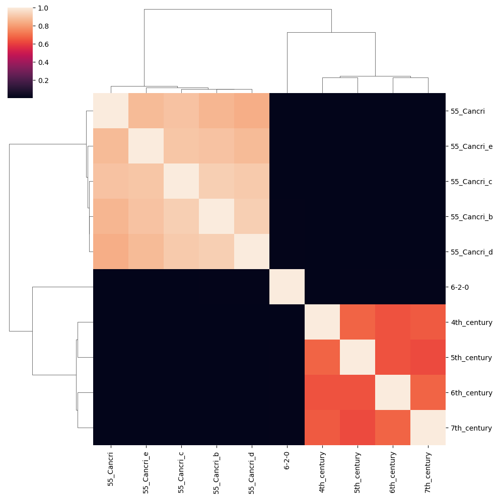

Wikispeedia: An exploration into human strategy through path navigation.
Wikispeedia: What the hell is this?
Since the earliest records, humans have wandered across endless lands and walked thorugh mysterious paths, in an attempt to uncover the unexplored and find better conditions for their tribes. The rise of agriculture and the industrial era has, however, changed things, turning us into bare sedentary animals… until now!
Wikispeedia is an easy and fun game: You are given two Wikipedia articles, and starting from the first article, your goal is to reach the second one exclusively by following links in the articles you encounter, effectively letting you explore your own paths across the vast wikipedia, for free! Your game data is collected by The EPFL Data Science Lab, which helps us and them better understand some aspects of human behaviour 😉.
Using this data, we ask ourselves, are there patterns in the way players navigate the network, that make them more successful? That is, are there any optimal strategy that doesn’t require extensive knowledge of the network?
Players are faced with multiple stimulae during the playing session, and players’ decisions as well as their posterior success may be influenced by them. For example, users might navigate the network through semantic similarity optimization, or they might just click the links found in images or tables, etc.
Do these particular features have any effect on players’ success? Let’s see!
A look into the collected data…
Code
import pandas as pdimport osparent_folder_path ='.data/wikispeedia_paths-and-graph/'paths_finished_df = (pd.read_csv(os.path.join(parent_folder_path, 'paths_finished.tsv'), sep='\t', skiprows=15, header=None) .rename(columns={0:"ip",1:"timestamp",2:"duration",3:"path",4:"rating"}))paths_unfinished_df=(pd.read_csv(os.path.join(parent_folder_path, 'paths_unfinished.tsv'), sep='\t', skiprows=16, header=None) .rename(columns={0:"ip",1:"timestamp",2:"duration",3:"path",4:"target",5:"type"}))# Read the shortest path matrixshortest_path_matrix = []withopen('.data/wikispeedia_paths-and-graph/shortest-path-distance-matrix.txt', 'r') as f:# the first 17 lines (indexed from 0) is the file description for line in f.readlines()[17:]: shortest_path_matrix.append(line)# next, we need a list of all the article names. The order of the articles # is the same as the shortest_path_matrix as per the file descriptionsarticles = pd.read_csv('.data/wikispeedia_paths-and-graph/articles.tsv', sep='\t', skiprows=11, header=None)[0]article_names_cleaned = []# NOTE TO GINEVRA:# I need to change the function below to use urlparse# some articles have encoded names. Decode thesefor article in articles:# the "%" character indicates an encoded nameif"%"notin article:# store the article name article_names_cleaned.append(article)else:withopen(os.path.join('.data/plaintext_articles', f'{article}.txt'), 'r') as f:# extract the correct name. It is always on the 3rd line of the article correct_name = f.readlines()[2].replace('\n', '')# store the article name article_names_cleaned.append(correct_name)article_names_cleaned[:3]# for each human path, perform the following steps:# 1. extract the source and target article# 2. find the *index* in the article names list that corresponds to the source and target article# 3. the corresponding *index* row in the shortest path matrix corresponds to the source article. # from this list of numbers, use the target article *index* to find the *shortest path length*def augment_with_shortest_path(df: pd.DataFrame, successful: bool) -> pd.DataFrame:""" this function takes a Series and returns a DataFrame with the following columns: 1. path 2. source article 3. target article 4. shortest path length input: df: the Pandas DataFrame containing all the human navigation paths successful: a boolean indicating whether the paths were successful or not """# remove all paths with back-tracks df = df[~df['path'].str.contains('<')]def clean_query_article_name(name: str) ->str:"""this helper function takes an encoded article name and returns the cleaned name"""if"%"in name:withopen(os.path.join('.data/plaintext_articles', f'{name}.txt'), 'r') as f:# extract the correct name. It is always on the 3rd line of the articlereturn f.readlines()[2].replace('\n', '') else:return name paths, human_path_lengths, source_articles, target_articles, shortest_paths = [], [], [], [], []# all information required for successful paths is in the path itselfif successful:for human_path in df['path']: paths.append(human_path) split_path = human_path.split(';')# subtract 1 because we do not count the source article human_path_lengths.append(len(split_path)-1) source = clean_query_article_name(split_path[0]) target = clean_query_article_name(split_path[-1]) source_articles.append(source) target_articles.append(target)# unsuccessful paths require extraction of the target article from a separate columnelse:for human_path, target inzip(df['path'], df['target']): paths.append(human_path) split_path = human_path.split(';')# subtract 1 because we do not count the source article human_path_lengths.append(len(split_path)-1) source = clean_query_article_name(split_path[0]) source_articles.append(source) target_articles.append(target)for source, target inzip(source_articles, target_articles): source_index = article_names_cleaned.index(source)# there are target articles that were not provided in the plain text filestry: target_index = article_names_cleaned.index(target)exceptException: shortest_paths.append("N/A")continue# query the shortest path matrix to get the correct vector (corresponding to the source article) shortest_path_vector = shortest_path_matrix[source_index]# now find the target article indexed integer in the vector shortest = shortest_path_vector[target_index]# it's not always possible to get to the target article. Impossible navigation is denoted by "_"if shortest =="_": shortest_paths.append("Impossible")else: shortest_paths.append(int(shortest))# create the augmented DataFrame out = pd.DataFrame({'path': paths,'source_article': source_articles,'target_article': target_articles,'human_path_length': human_path_lengths,'shortest_path_length': shortest_paths })return outsuccessful_df = augment_with_shortest_path(df=paths_finished_df, successful=True)# to investigate human behaviour, we remove all "Impossible paths" and also shortest_path_length = 0successful_df = successful_df[(successful_df['shortest_path_length'].apply(lambda x: x !='Impossible'and x !=0))]# next, we will keep only shortest_path_lengths >= 3successful_df = successful_df[(successful_df['shortest_path_length'].apply(lambda x: x >=3))]unsuccessful_df = augment_with_shortest_path(df=paths_unfinished_df, successful=False)# some target articles for unsuccessful paths were not provided in the plain_text folder, denoted in# the DataFrame as "N/A". Remove theseunsuccessful_df = unsuccessful_df[(unsuccessful_df['shortest_path_length'].apply(lambda x: x !='N/A'and x !='Impossible'))]# some unsuccesful paths only contain 1 article because the user didn't click anything# these are less meaningful paths to analyze as we are interested in users who tried but failed# we will keep paths where the human clicked at least 3 articlesunsuccessful_df = unsuccessful_df[(unsuccessful_df['shortest_path_length'].apply(lambda x: x >=3))]unsuccessful_df = unsuccessful_df[(unsuccessful_df['human_path_length'].apply(lambda x: x >=3))]
How are the data distributed among successful and unsuccessful games? The following plots show
The distributions of optimal lengths of the proposed games.
The distributions of path lengths obtained by humans.
Code
# take a look at the shortest_path distributionsimport matplotlib.pyplot as pltimport seaborn as snsfig, ax = plt.subplots(2,1, figsize=(10,8), gridspec_kw={"hspace":0.4})plt.rcParams["font.size"] =12successful_counts = (successful_df['shortest_path_length'] .value_counts() .reset_index())successful_counts["success"] ="successful"unsuccessful_counts = (unsuccessful_df['shortest_path_length'] .value_counts() .reset_index())unsuccessful_counts["success"] ="unsuccessful"all_counts = pd.concat([successful_counts, unsuccessful_counts], axis=0)sns.barplot(data=all_counts, x="index", y="shortest_path_length", hue="success", ax=ax[0], palette=["#b2df8a", "#1f78b4"])ax[0].set_ylabel('Absolute Counts');ax[0].set_xlabel('Shortest Path');ax[0].set_title("1. Optimal lengths of the proposed games.")#Count of human paths, stratified by shortest possible path")ax[0].legend(loc=1)ax[0].set_ylabel('Absolute Counts') ax[0].set_xlabel('Shortest Path')# Next plot: frequency by human lengthsuccessful_human_path_lengths_3 = (successful_df [successful_df['shortest_path_length'] ==3] ['human_path_length'] .value_counts() .reset_index())successful_human_path_lengths_3["success"] ="successful"unsuccessful_human_path_lengths_3 = (unsuccessful_df [unsuccessful_df['shortest_path_length'] ==3] ['human_path_length'] .value_counts() .reset_index())unsuccessful_human_path_lengths_3["success"] ="unsuccessful"all_path_l3 = pd.concat([successful_human_path_lengths_3, unsuccessful_human_path_lengths_3])sns.barplot(data=all_path_l3, x="index", y="human_path_length", hue="success", ax=ax[1], palette=["#b2df8a", "#1f78b4"])ax[1].set_xlim(-0.5,10.5)ax[1].set_ylabel('Absolute Counts')ax[1].set_xlabel('Human path length')ax[1].set_title("2. Path lengths obtained by human players, when optimal length is 3.")# Count of human path lengths, with shortest possible path = 3");ax[1].legend(loc=1);
Given a shortest path length of 3, the majority of human path lengths are 3, 4, 5 for both successful and unsuccessful paths. Let’s filter the corresponding DataFrames to only keep these path lengths. The matched analysis will be done with these lengths.
And now the real deal
We wanna test wheather different strategies lead to success in the Wikispeedia game. With this goal in mind, paths can be characterized through local features of the clicked links and articles. The features we extract are:
Relative position of each hyperlink within the current article.
Is the hyperlink next to an image?
Is the hyperlink inside a table?
Similarity between current and target article.
Hyperlink curvature along the path.
Once each path has been featurized we perform a matching analysis that lets us reduce the bias in the distributions of successful and unsuccessful populations. For this, we find pairs of subjects (paths) in the dataset, that have very similar features, but differ in the one we want to test (the treatment). The new distributions will then be much less biased and we will be able to compare the effect of the treatment variable.
Confounding variables
Many factors can affect the analysis, among them:
the difficulty of each task, and
the strategy adopted to solve it.
To address the first, we naively quantify difficulty of a task as the minimum distance between the source and the target, as determined with the Floyed-Warshall algorithm, while the second is addressed through path length, e.g. the total number of links clicked by each player in the given game.
Controlling by such variables allows a first approximation to controlling these confounding effects.
Treatment
We will test the effect of clicking mostly links in image boxes.
The question is then: given an equally difficult task assigned, and having a fixed number of possible choices to perform, are players more successful if they adopt clicking mainly links in images as a strategy?
Code
successful_df = successful_df[(successful_df['shortest_path_length'].apply(lambda x: x ==3))]successful_df = successful_df[(successful_df['human_path_length'].apply(lambda x: 3<= x <=5))]successful_df.head(3)
path
source_article
target_article
human_path_length
shortest_path_length
1
14th_century;Europe;Africa;Atlantic_slave_trad...
14th_century
African_slave_trade
4
3
5
14th_century;Europe;North_America;United_State...
14th_century
John_F._Kennedy
5
3
6
14th_century;China;Gunpowder;Fire
14th_century
Fire
3
3
Code
unsuccessful_df = unsuccessful_df[(unsuccessful_df['shortest_path_length'].apply(lambda x: x ==3))]unsuccessful_df = unsuccessful_df[(unsuccessful_df['human_path_length'].apply(lambda x: 3<= x <=5))]unsuccessful_df.head(3)
path
source_article
target_article
human_path_length
shortest_path_length
5
Agriculture;History_of_the_world;China;Yangtze...
Agriculture
Grand_Canal_of_China
3
3
13
Ape;Asia;Computer;Automobile
Ape
Tin
3
3
14
Symmetry;Science;Age_of_Enlightenment;Dark_Age...
Symmetry
Scottish_Episcopal_Church
5
3
At this point, we have filtered the successful and unsuccessful DataFrames by the following conditions:
Shortest path length = 3 --> we hypothesize that all paths have the same "difficulty" by enforcing this
The actual human path lengths are 3,4,5 --> the majority of human paths are within these lengths
The next step is to perform matching of datasets. To make this process possible, we first augment both successful and unsuccessful DataFrames with is_successful Boolean condition.
Code
successful_df['is_successful'] =1unsuccessful_df['is_successful'] =0# merge the successful and unsuccessful DataFramesfinal_df = pd.concat([successful_df, unsuccessful_df])final_df.reset_index(drop=True, inplace=True)final_df.head(3)# save the DataFramefinal_df.to_csv('final_df.csv')# next, we will calculate "treatments" involving semantic distance metrics for the DataFrame
2 . Document Similarity Similarity Between Wikipedia Articles: ‘Bag-of-Words’ Cosine Similarity Based on Word Frequencies
We are interested in measuring similarity between Wikipedia articles to investigate players’ strategies in Wikispeedia. The proposed similarity is Cosine Similarity measured on word frequencies given a pair of articles. Therefore, the assumption we make is that articles with similar occurrences of words are similar.
In order to mitigate similarity due to common English words such as “the”, we apply a filter as follows:
Remove all Stop words as defined in Scikit-learn
https://scikit-learn.org/stable/modules/feature_extraction.html#nqy18
Remove all white spaces and \n characters
Apply a scaled version of word frequency count as implemented in TfidfTransformer in Scikit-learn:
https://scikit-learn.org/stable/modules/generated/sklearn.feature_extraction.text.TfidfTransformer.html#sklearn.feature_extraction.text.TfidfTransformer
The cell blocks below show our data processing pipeline.
Code
import osbase_path ='.data/plaintext_articles'articles = os.listdir(base_path)# sort the article names in alphabetical order. This is not strictly requiredarticles =sorted(articles)def remove_duplicates_and_fix_names(articles: list):"""this function parses all the articles provided in the plaintext folder and stores the names of all the articles after "cleaning" them (some articles containing accents have encoded names). The raw text from the files are also stored in a list after removing white spaces and empty lines."""def parse_text(article: str) ->str:"""this helper function reads a raw text file and removes white spaces and empty lines."""withopen(os.path.join(base_path, article)) as f:# remove white spaces raw_text = [line.rstrip() for line in f.readlines()]# remove empty lines raw_text = [line.strip() for line in raw_text if line !='']returnstr(raw_text)# some article names have errors - fix these article_names_cleaned, texts = [], []for article in articles:# the "%" character indicates an encoded nameif"%"notin article:# store the article name article_names_cleaned.append(article)# store the raw text from the article texts.append(parse_text(article))else:withopen(os.path.join(base_path, article), 'r') as f:# extract the correct name. It is always on the 3rd line of the article correct_name = f.readlines()[2].replace('\n', '')# store the article name article_names_cleaned.append(correct_name)# store the raw text from the article texts.append(parse_text(article))# remove ".txt" from the article names article_names_cleaned = [article.replace('.txt', '') for article in article_names_cleaned]# remove list bracket from string casting of raw text texts = [text.replace('[', '') for text in texts]return article_names_cleaned, textsarticle_names_cleaned, texts = remove_duplicates_and_fix_names(articles)
Code
# count word frequency using sklearn out-of-the-box functionsfrom sklearn.feature_extraction.text import CountVectorizer, TfidfVectorizerimport pandas as pdimport numpy as np# remove common stop wordstfid_vectorizer = TfidfVectorizer(stop_words='english')# apply CountVectorizer and TfidfTransform sequentiallymatrix = tfid_vectorizer.fit_transform(texts)matrix = matrix.todense()# by default, "TfidfVectorizer" uses l2 norm and thus, to obtain the Cosine Similarity,# we simply perform a dot product of the matrixcosine_sim = pd.DataFrame(np.dot(np.array(matrix), np.array(matrix).T), columns=article_names_cleaned)# assign the index names also as the article names. This is used for easy querying pairs of articlescosine_sim.index = article_names_cleaned cosine_sim
Áedán mac Gabráin
Åland
Édouard Manet
Éire
Óengus I of the Picts
€2 commemorative coins
10th_century
11th_century
12th_century
13th_century
...
Ziad_Jarrah
Zimbabwe
Zinc
Zinc_chloride
Zion_National_Park
Zionism
Zirconium
Zoroaster
Zuid-Gelders
Zulu
Áedán mac Gabráin
1.000000
0.003680
0.006182
0.047190
0.183846
0.004210
0.008076
0.012168
0.013427
0.011928
...
0.004239
0.006244
0.001843
0.002172
0.003523
0.006111
0.001494
0.008908
0.001593
0.012721
Åland
0.003680
1.000000
0.008423
0.017851
0.004137
0.043866
0.007999
0.004936
0.004993
0.013233
...
0.004768
0.023149
0.002752
0.002160
0.007089
0.016041
0.003315
0.005287
0.008188
0.012883
Édouard Manet
0.006182
0.008423
1.000000
0.009609
0.006520
0.014643
0.011617
0.008879
0.011491
0.011438
...
0.010377
0.011835
0.004556
0.002780
0.011044
0.014414
0.004934
0.009887
0.005441
0.012838
Éire
0.047190
0.017851
0.009609
1.000000
0.049035
0.033312
0.012264
0.008489
0.033374
0.015251
...
0.009314
0.038388
0.006863
0.005671
0.005486
0.031955
0.005751
0.012004
0.004430
0.019581
Óengus I of the Picts
0.183846
0.004137
0.006520
0.049035
1.000000
0.006741
0.012741
0.013508
0.020239
0.012106
...
0.004763
0.008280
0.002700
0.002718
0.005656
0.008067
0.001780
0.009081
0.001923
0.015018
...
...
...
...
...
...
...
...
...
...
...
...
...
...
...
...
...
...
...
...
...
...
Zionism
0.006111
0.016041
0.014414
0.031955
0.008067
0.017812
0.019210
0.021355
0.024060
0.023037
...
0.012631
0.038386
0.007253
0.003734
0.028964
1.000000
0.006372
0.016985
0.004575
0.026654
Zirconium
0.001494
0.003315
0.004934
0.005751
0.001780
0.006597
0.007255
0.005258
0.004183
0.005319
...
0.003589
0.010286
0.065117
0.038394
0.005937
0.006372
1.000000
0.005025
0.003256
0.004729
Zoroaster
0.008908
0.005287
0.009887
0.012004
0.009081
0.010104
0.021481
0.019697
0.017953
0.024732
...
0.008748
0.014037
0.005008
0.003395
0.009401
0.016985
0.005025
1.000000
0.003077
0.011154
Zuid-Gelders
0.001593
0.008188
0.005441
0.004430
0.001923
0.005124
0.004908
0.004378
0.002217
0.004719
...
0.003414
0.008758
0.002613
0.002273
0.004882
0.004575
0.003256
0.003077
1.000000
0.008353
Zulu
0.012721
0.012883
0.012838
0.019581
0.015018
0.011059
0.010697
0.010512
0.010046
0.015055
...
0.007460
0.074077
0.003745
0.003207
0.009320
0.026654
0.004729
0.011154
0.008353
1.000000
4604 rows × 4604 columns
Code
# save the Cosine Similarity matrix so we do not have to re-compute it every timenp.save('cosine_similarity.npz', np.array(cosine_sim))
Code
import matplotlib.pyplot as plt# let's take a look at the Cosine Similarity distribution of the most similar article to a given articlemost_similar = []for idx inrange(len(cosine_sim)):# index [-2] because index [-1] is always = 1 since it is a self similarity most_similar.append(sorted(cosine_sim.iloc[idx])[-2])# plot the similaritiespd.Series(most_similar).plot(kind='hist', edgecolor='k')plt.title("Cosine Similarity Distribution of Most Similar Articles")plt.xlabel("Cosine Similarity"); plt.ylabel("Absolute Counts")# there are no glaring red flags, e.g., most Cosine Similarities close to 0 or 1
Text(0, 0.5, 'Absolute Counts')
Code
# show a few concrete examples and see if our metric makes empirical sensecosine_sim['Ukraine'].sort_values()# results look reasonable
import seaborn as sns# "Cygni" are star systems/extrasolar planets and thus are expected to be similar# the time periods have some similaritysns.clustermap(cosine_sim.iloc[10:20, 10:20])
<seaborn.matrix.ClusterGrid at 0x14dde5340>

Code
# "Cancri" are exoplanets and thus are expected to be similar# we again see similarity between time periodssns.clustermap(cosine_sim.iloc[50:60, 50:60])
<seaborn.matrix.ClusterGrid at 0x14ddd2490>
Code
# after confirming that the Cosine Similarity method is informative, we next show the function# we will use to extract similarity of articles in a navigation path# first show a hard-coded navigation path for illustrationnavigation_path ='14th_century;Time;Light;Rainbow'
Code
def get_path_cosine_similarity(path: str, matrix: pd.DataFrame, method: str='sequential') ->list:"""this function takes a navigation path string and returns an array of the Cosine Similarity. Two methods are supported: 'sequential' (default) which measures the sequential similarity and 'target' which measures the similarity between the current article at the target article. Input: path: navigation path string matrix: pre-computed Cosine Similarity matrix method: measurement method (defaults to 'sequential') Return: list: list of similarity measures """# there is 1 article that is duplicated in the plaintext folder. Problematically, the duplicated# article has different names and navigation paths can point to these different names, yet the # article is the same. This one exception is handled here. In the implementation, we do not have to # worry about this particular article pointing back to itself as it is not possible# navigation paths are separated by ";" path = path.split(';')# if the path only contains the starting article, return Noneiflen(path) ==1:returnNone path_sims = []def get_correct_name(query: str, base_path: str='.data/plaintext_articles') ->str:"""this nested function is called in case a path contains error characters. Returns the fixed path so it can be used to query the Cosine Similarity matrix."""if'_'in query and'%'notin query:return queryelif query in ['Podcasting', 'Color', 'Fencing', 'Anemia', 'Quito']:return queryelse:withopen(os.path.join(base_path, f'{query}.txt'), 'r') as f: out = f.readlines()[2].replace('\n', '')return out# compute the similarity between sequential nodes# output list length is N-1if method =='sequential':for idx inrange(0, len(path)-1, 1):try: path_sims.append(matrix.loc[path[idx]].loc[path[idx+1]])exceptException:# either path or both paths could be wrong - just "fix" both# treat the 1 exception due to duplicated fileif get_correct_name(path[idx]) =='Polish–Muscovite War (1605–1618)': sim =float(cosine_sim.loc['Polish–Muscovite War (1605–1618)'].drop_duplicates()[get_correct_name(path[idx+1])]) path_sims.append(sim)elif get_correct_name(path[idx+1]) =='Polish–Muscovite War (1605–1618)': sim = cosine_sim.loc[get_correct_name(path[idx])].drop_duplicates()['Polish–Muscovite War (1605–1618)'] path_sims.append(sim)else: path_sims.append(matrix.loc[get_correct_name(path[idx])].loc[get_correct_name(path[idx+1])])# compute the similarity between the current node and the target node# output list length is Nelif method =='target':for idx inrange(0, len(path), 1):try: path_sims.append(matrix.loc[path[idx]].loc[path[-1]])exceptException:# either path or both paths could be wrong - just "fix" both# treat the 1 exception due to duplicated fileif get_correct_name(path[idx]) =='Polish–Muscovite War (1605–1618)': sim = cosine_sim.loc['Polish–Muscovite War (1605–1618)'].drop_duplicates()[get_correct_name(path[-1])] path_sims.append(sim)elif get_correct_name(path[-1]) =='Polish–Muscovite War (1605–1618)': sim =float(cosine_sim.loc[get_correct_name(path[idx])].drop_duplicates()['Polish–Muscovite War (1605–1618)']) path_sims.append(sim)else: path_sims.append(matrix.loc[get_correct_name(path[idx])].loc[get_correct_name(path[-1])])else:raiseValueError('Unsupported similarity method: choose from "sequential" or "target".')return path_sims
Code
print(navigation_path.split(';'))# show the "sequential" methodsequential_sims = get_path_cosine_similarity(path=navigation_path, matrix=cosine_sim, method='sequential')# intepreted as:# sim(14th_century, Time) = 0.031# sim(Time, Light) = 0.147# sim(Light, Rainbow) = 0.158# the similarity list is always N-1 in length, N = # nodessequential_sims
# show the "target" methodtarget_sims = get_path_cosine_similarity(path=navigation_path, matrix=cosine_sim, method='target')# intepreted as:# sim(14th_century, Rainbow) = 0.008# sim(Time, Rainbow) = 0.035# sim(Light, Rainbow) = 0.158# sim(Rainbow, Rainbow) = 1 (the path was successful so similarity is 1)# the similarity list is now N in length, N = # nodes# note: paths where the last index != 1 means the path was unsuccessfultarget_sims
# calculate the "sequential" and "target" cosine similarities and augment the DataFrame with these metricsfinal_df['path_seq_cosine_sim'] = final_df['path'].apply(lambda x: get_path_cosine_similarity(x, matrix=cosine_sim))final_df['path_target_cosine_sim'] = final_df['path'].apply(lambda x: get_path_cosine_similarity(x, matrix=cosine_sim, method='target'))final_df.head(3)
path
source_article
target_article
human_path_length
shortest_path_length
is_successful
path_seq_cosine_sim
path_target_cosine_sim
0
14th_century;Europe;Africa;Atlantic_slave_trad...
14th_century
African_slave_trade
4
3
1
[0.06712629693232745, 0.20733258691597292, 0.3...
[0.030770302481984573, 0.1043890593428143, 0.3...
1
14th_century;Europe;North_America;United_State...
14th_century
John_F._Kennedy
5
3
1
[0.06712629693232745, 0.17836530050620195, 0.3...
[0.012741833088878754, 0.02487036054931131, 0....
2
14th_century;China;Gunpowder;Fire
14th_century
Fire
3
3
1
[0.06407585068130972, 0.0719709239718701, 0.07...
[0.016703039404061093, 0.03765346608762515, 0....
Code
# next, write a function that returns whether the Cosine similarities in a navigation path are increasing/decreasingdef sims_to_bool_path(path: str):"""this function takes a navgiation path as input and returns the path with same dimensions containing Booleans denoting whether the Cosine similarity is increasing""" bool_path = []for idx inrange(len(path)-1):if path[idx+1] > path[idx]: bool_path.append(True)else: bool_path.append(False)return bool_path
# this function filters paths that only contain strictly increasing Cosine similaritiesdef filter_strictly_increasing_sims(path_list: list):returnFalseifFalsein path_list elseTruefinal_df['seq_strictly_increasing'] = final_df['path_seq_boolean'].apply(filter_strictly_increasing_sims)final_df['target_strictly_increasing'] = final_df['path_target_boolean'].apply(filter_strictly_increasing_sims)final_df.head(3)
path
source_article
target_article
human_path_length
shortest_path_length
is_successful
path_seq_cosine_sim
path_target_cosine_sim
path_seq_boolean
path_target_boolean
seq_strictly_increasing
target_strictly_increasing
0
14th_century;Europe;Africa;Atlantic_slave_trad...
14th_century
African_slave_trade
4
3
1
[0.06712629693232745, 0.20733258691597292, 0.3...
[0.030770302481984573, 0.1043890593428143, 0.3...
[True, True, True]
[True, True, True, True]
True
True
1
14th_century;Europe;North_America;United_State...
14th_century
John_F._Kennedy
5
3
1
[0.06712629693232745, 0.17836530050620195, 0.3...
[0.012741833088878754, 0.02487036054931131, 0....
[True, True, False, False]
[True, True, True, True, True]
False
True
2
14th_century;China;Gunpowder;Fire
14th_century
Fire
3
3
1
[0.06407585068130972, 0.0719709239718701, 0.07...
[0.016703039404061093, 0.03765346608762515, 0....
[True, False]
[True, True, True]
False
True
Code
# the matching algorithm requires some computation time# compute the matched DataFrames all at once and save them so they can be read into memory directly# there are 2 treatments# 1. strictly increasing *sequential* Cosine similarity# 2. strictly increasing *target* Cosine similarity# there are also 3 conditions we filter on# 1. human_path_length = 3# 2. human_path_length = 4# 3. human_path_length = 5import networkx as nxfor treatment in ['seq_strictly_increasing', 'target_strictly_increasing']:for length in [3,4,5]: treatment_df = final_df[final_df[treatment] ==True] control_df = final_df[final_df[treatment] ==False] G = nx.Graph()for control_id, control_row in control_df.iterrows():for treatment_id, treatment_row in treatment_df.iterrows():# Adds an edge only for the same human path lengthif (control_row['human_path_length'] == length and treatment_row['human_path_length'] == length): G.add_edge(control_id, treatment_id) matching = nx.max_weight_matching(G) matched = [i[0] for i inlist(matching)] + [i[1] for i inlist(matching)] balanced_df = final_df.iloc[matched]# save balanced_df balanced_df.to_csv(f'{treatment}_{length}.csv')
KeyboardInterrupt:
Code
# next, perform logistic regression on each treatment with fixed human path length# read all the matched DataFrames into memorydf_seq_3 = pd.read_csv('seq_strictly_increasing_3.csv')df_seq_4 = pd.read_csv('seq_strictly_increasing_4.csv')df_seq_5 = pd.read_csv('seq_strictly_increasing_5.csv')df_target_3 = pd.read_csv('target_strictly_increasing_3.csv')df_target_4 = pd.read_csv('target_strictly_increasing_4.csv')df_target_5 = pd.read_csv('target_strictly_increasing_5.csv')# store all results in a dictionaryresults = {}import statsmodels.formula.api as smffor df, experiment_name inzip([df_seq_3, df_seq_4, df_seq_5, df_target_3, df_target_4, df_target_5], ['Sequential 3', 'Sequential 4', 'Sequential 5', 'Target 3', 'Target 4', 'Target 5']):if'Sequential'in experiment_name: mod = smf.logit(formula='is_successful ~ seq_strictly_increasing', data=df)else: mod = smf.logit(formula='is_successful ~ target_strictly_increasing', data=df) res = mod.fit()# dictionary to store the coefficients and p-values of the current experiment curr_analysis = {}# store the intercept curr_analysis['Intercept'] = res.params[0]# store the intercept p-value curr_analysis['Intercept p-value'] = res.pvalues[0]# store the coefficient for **strictly increasing Cosine similarity** curr_analysis['Coefficient'] = res.params[1]# store the coefficient p-value curr_analysis['Coefficient p-value'] = res.pvalues[1] results[experiment_name] = curr_analysisresults_df = pd.DataFrame(results)results_df
The syntax in the above table is interpreted as :
Sequential means the strictly increasing Cosine similarity was measured for sequential articles
Target means the strictly increasing Cosine similarity was measured based on sequential article compared to the target article
The number indicates the human path length fixed. Previously, we also fixed that the shortest path length is 3.
Our research question is:
When given X number of choices in the same difficulty game, how did successful and unsuccessful players differ in their clicking behaviour?
Based on the above table, the p-values for both the incercept and coefficient for logistic regression are significant for all experiments except 1 (Sequential 5). The interpretation for all experiment findings are similar. Concretely, consider the experiment Sequential 3. The interpretation is:
*Given a shortest path length of 3 (fixed difficulty) and given a human path length of 3 (when the human makes 3 choices on article clicks), clicking articles with increasing Cosine similarity between sequential articles (as a proxy to measure semantic meaning), leads to more successful outcomes.*
For Target experiments have a similar interpretation. Concretely, consider the experiment Target 5:
*Given a shortest path length of 3 (fixed difficulty) and given a human path length of 5 (when the human makes 5 choices on article clicks), clicking articles with increasing Cosine similarity between the current article and the target article (as a proxy to measure semantic meaning), leads to more successful outcomes.*
These findings are interesting and suggest that (potentially contrarily to common sense) clicking articles based on semantic meaning can lead to more successful outcomes in the Wikispeedia game (at least the current version we are investigating).